The Tour
Up to this point, the challenges of running this operating system on this type of hardware should
have been made apparent. Under the guidance of Steve Jobs, Apple's ecosystem has ‘end-to-end’ control (1).
This inhibits hobbyists, such as the team over at Asahi, to express their creativity. As many hobbyists have come
to find out though, cracking this end-to-end control is part of the fun. From jailbreaking iPhones to installing a
completely separate operating system not intended for the device, it seems as if Developers and Hardware hobbyists
enjoy the challenge and the prestige that comes from using Apple’s hardware in unintended ways. To highlight the power of
Apple’s hardware and the versatility of Linux, the remainder of this article will be dedicated to the installation of Asahi
Linux, the hurdles of the process, and the experiences of myself using the alternative OS and the experiences of others.
Preface
I would like to focus on the installation experience for a moment. Navigating to the Asahi Linux website, asahilinux.org,
you will be greeted with a bunch of information about the project. There is some general information about the project:
Where the name comes from, is this legal, some of their developers, their social media, etc. The installation material can
be found in a blog post in the middle of the page. Once there, a provided ‘curl’ command provides the necessary information
to get started.
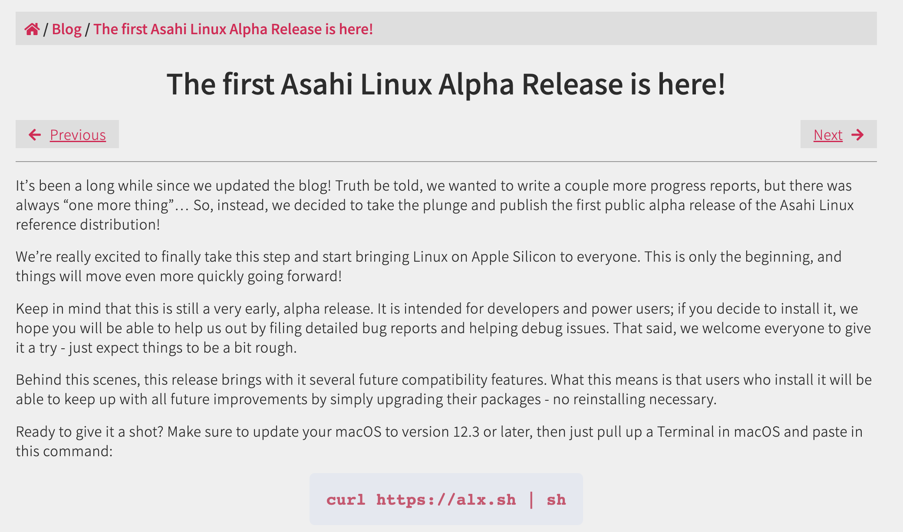
Minimal hardware requirements, different options for installation, what works and doesn’t work, and some known bugs.
Finishing off with some references to any other questions that could arise. For this tutorial, I will be using the ‘macOS’ terminal.
Further, on this machine, I have a 512GB Harddrive, 32GBs or RAM, an M1 Pro Chip, and macOS Ventura (13.0.1). Note that macOS 12.3 is
required for this process.
Installation
Step 1: Running the 'curl' command
As instructed the first thing I made sure to do was run the provided ‘curl’ command to get the Asahi Linux installer. On running,
you will be asked to provided your computers login credentials.
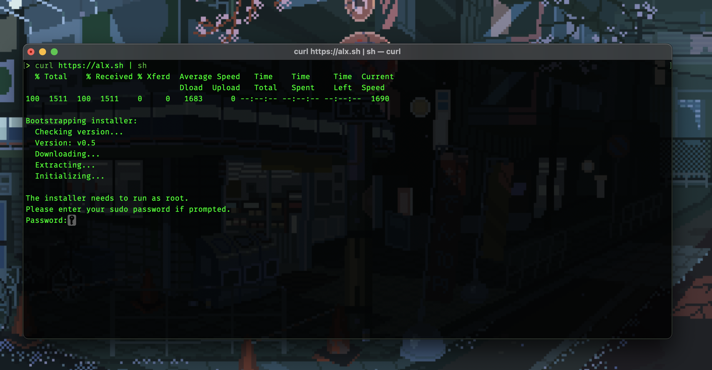
Step 2: The Asahi Installer
It should be noted that this installer requires the internet to function. Without, this process will not work. The first thing the
installer will ask you to do is whether to enable developer mode. This mode is reserved for individuals looking to develop the distribution
further; making the OS unstable. Seeing as I am not looking to be a developer for this distro, I elected not to enable it.

Step 3: Resizing the harddrive to give Asahi Space
It would make sense that the distro needs space to be able to run, which is exactly what the next step of the installation process is.
The installer will ask if you would like to resize your harddrive and will give the minimum size that needs to be. Evidently, I cannot read.

Step 4: Fix the mistakes and try again
For some reason, the installer failed to allocated the required space, I ran it again and it seemed to work.


Step 5: Giving Asahi the room it needs to install
In the previous step, the computer created a new partition to install the distro. Now, in that new partition, the installer will install the
distro. The installer will now ask how much space you are willing to give the distro so it can function. The recommended minimum is 15 GBs,
however, I gave it 75GBs just to be safe. Also, it will ask if you would like to install ‘Arch Minimal’ or Arch Desktop. For simplicity, I
choose to have a working desktop environment so I wouldn’t have to deal with the arch installation process.


Step 6: Almost there!
Were almost there! The installer will ask for your login credentials for the admin account of the macOS system the distro is being installed on,
twice. Once completed, it will give you a “Installation Successful Message!” then some information about the install. Lastly, after hitting
continue a second to last time, it will display the ‘dual boot iunstructions’. A last ‘press enter’ in the terminal will cause the computer to shut down.
Follow the onscreen instructions to boot into Asahi.

Step 7: Dual Boot Process
The majority of the photos used from this point on were taken on my iPhone 12 and are not a screenshot of the computer. That said, once the
instructions in the previous step were followed you will come to a screen where you can choice between either macOS and Asahi. Choose Asahi.
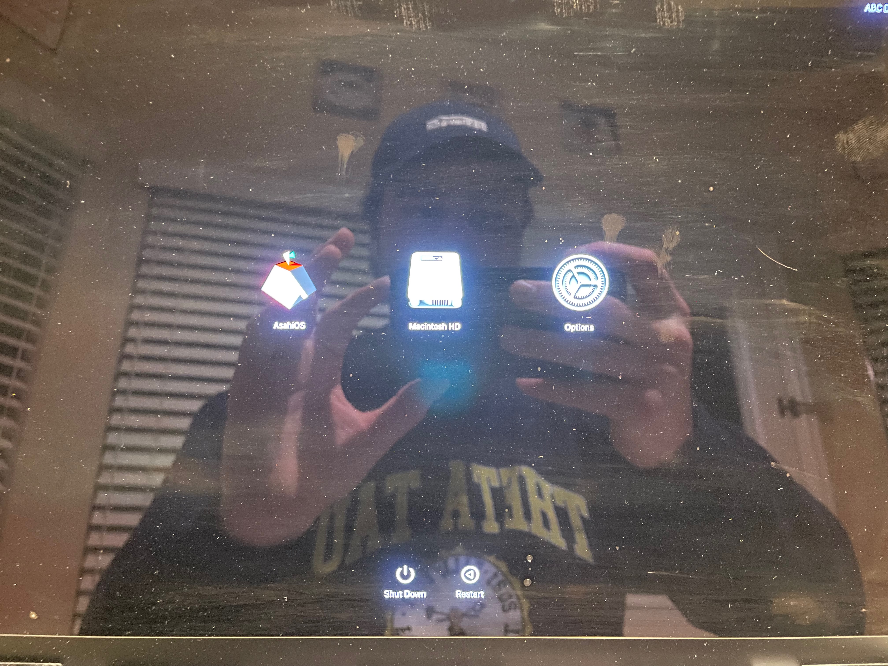
Step 8: Security warning
Before moving on, the onscreen terminal will issue a warning and ask for two credential authorizations before proceeding, I provided both and
once done it will ask you to reboot.
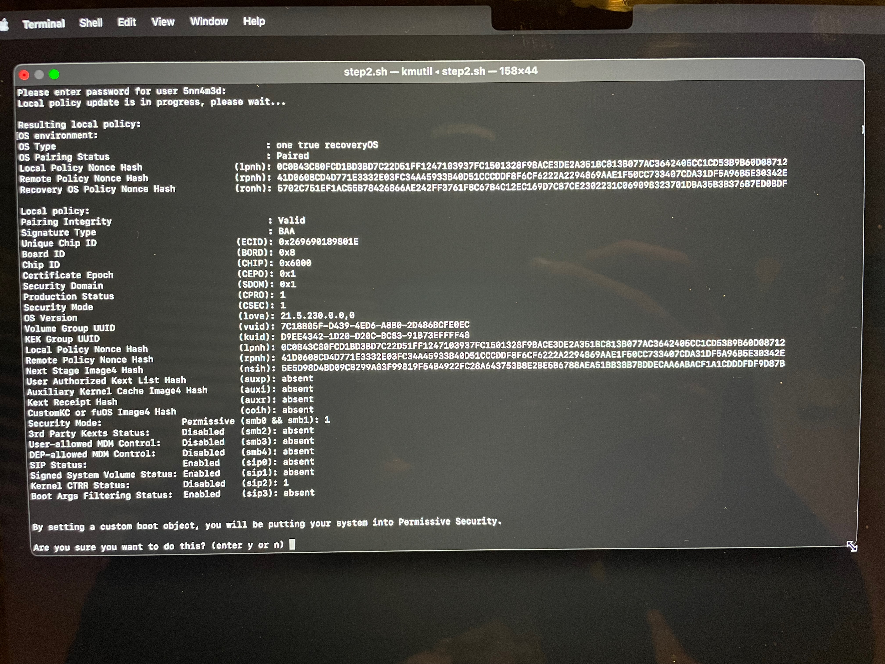
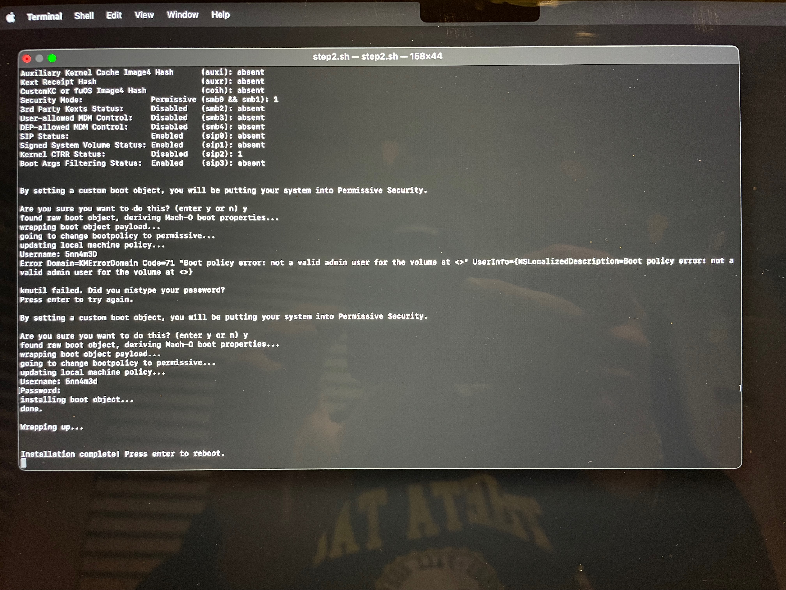
Step 9: Your done!
Rebooting will put you into the Asahi Linux configuration tool. Here you can specify your preferred language, keyboard layout, user account, etc.
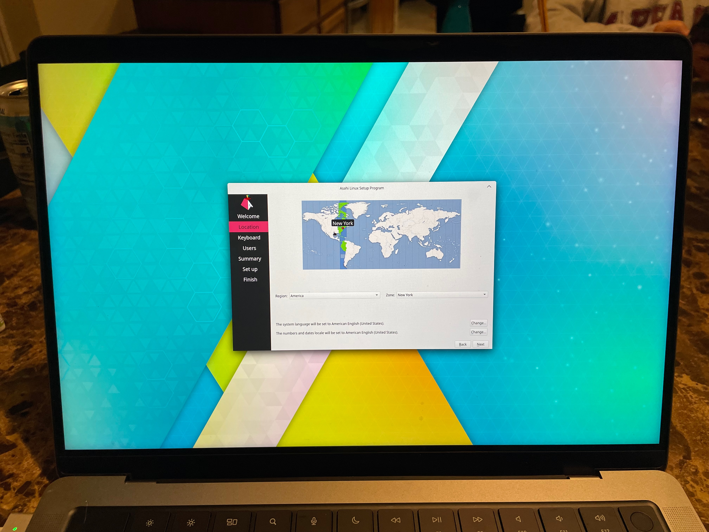
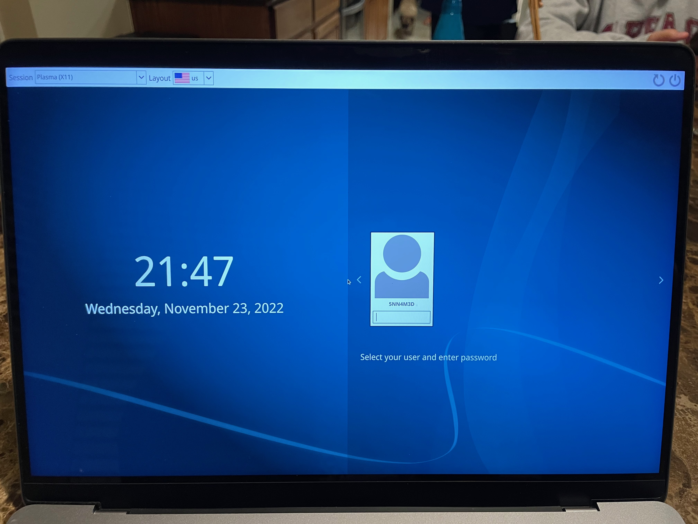
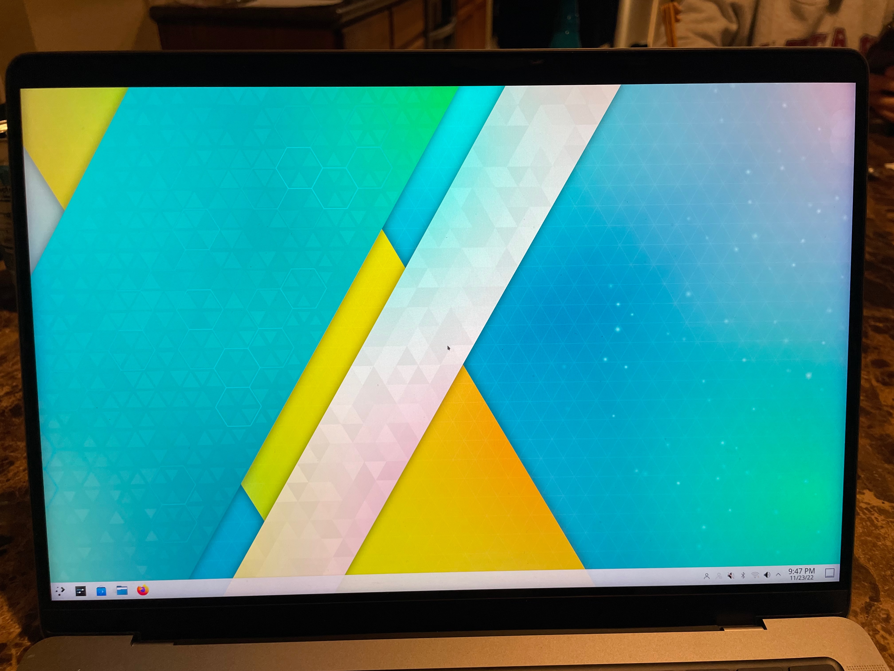
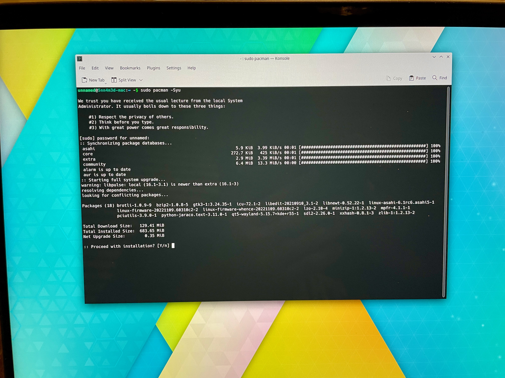
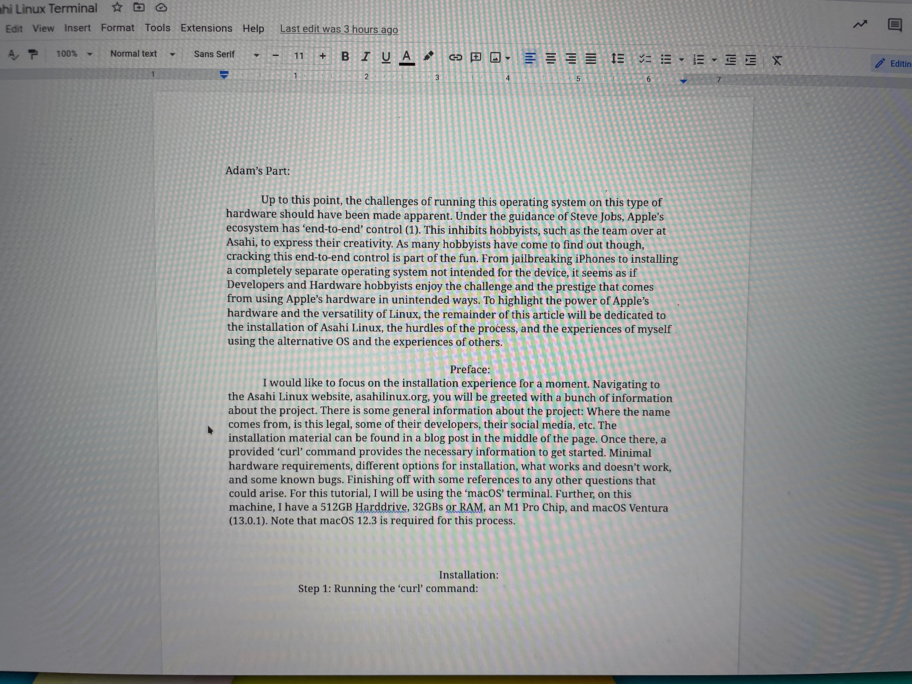
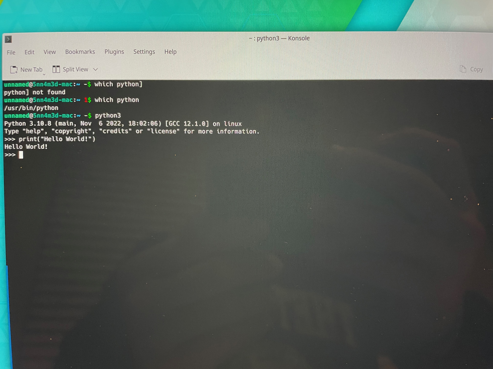
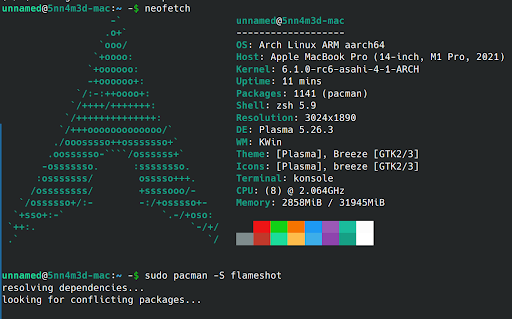
The Aftermath
I have been a windows user for about as long as I can remember. I grew up with Vista and 7, eventually making my way to 10 when it came out.
I would play games, do school projects, etc on a windows machine. Windows, to me, has always been a safety net to learning about computers.
You can always do whatever need to do, on a windows machine. I never really had a family member who had, or used a Apple machine. There was a
hort amount of time when my family had a Apple Mini computer, but that was quickly thrown out for just being a terrible computer. I know how to use
macOS, but I am still learning. This past summer, however, I decided to make the switch to macOS with the M1 Pro chip. I needed the battery life
as my old windows laptop was dying quicker then I could charge it. So far, I have been loving the system. There has been a couple headaches and
hurdles, but by all accounts, it just works. That is unless, you want to use the machine in unintended ways; like installing a linux distribution.
To, ‘cut the crap’, I effectively bricked my system trying to uninstall linux. As per the official Asahi instructions: to uninstall, just deleted
the partition given to linux. Fair enough. So thats what I tried to do. I shut down my computer, followed the same process to get to the dual boot
options, and tried to log into macOS. Only to find that I had borked the macOS kernel and could not boot into it. Naturally I freaked out. I have
data that was not backed up (stupid of me I know) and needed to get it off before I could go through and make any actually progress on restoring my
system. Luckily I was able to get a terminal up and running and an external harddrive connected to my laptop to pull the data I needed to off, but man was
it a pain. Lesson learned.
Next, I needed to install macOS again. This is where the problems started to arise. Remember a couple of steps back where we partitioned the
harddrive so we could a blank space to install Asahi? I couldn’t get ride of it. I tried EVERYTHING, and NOTHING worked. I was able to get the
distro uninstalled effortlessly. I just selected the volume it was on and deleted it, it was getting ride of the almost 300GBs partition I was
having problems with. Even whipping the harddrive completely, withever thing on it mind you was not enough to remedy the situation. Luckily while
I was doing this project, I was in Dallas and able to get to an Apple Store to visit the Genius bar. By dumb luck, I have Apple Care on this device
and had the firmware reset. Thats right, this entire process gave me a new computer at the low cost of my anxiety spiking.
I personally believe that this could have been a lot easier to fix if it wasn’t for Apple’s ‘end-to-end’ policy. To many who will read this article,
it is well know that Apple doesn’t like the average joe messing around with their hardware. They have gotten better at it in recent years by allowing
more people to be ‘authorized’ to service their devices, but it’s a long shot from where they need to be. Asahi Linux is having to reverse engineer
their way through this project because there are no open source drivers or documentation for their product on a hobbyiest level. Maybe in due time
Apple will release this information to the public and allow us to use the machines we bought how we like rather than how they like, but alas, we will
have to wait and see. For now, Asahi Linux works, but is still in alpha stages; My laptop is back to how it’s supposed to be, minus a few programs; And
no crucial data was lost. Over all I would call this a win. I had a fun time installing this distro and checking it out, the team did an amazing team job
given their limitations and I can’t wait to see how this turns out in the future.
Other Asahi Users experiences
As I had previously mentioned, I would like to include the experiences of another individuals view to gain a better perspective on the project. The following is an account from
a friend of mine who also attends Texas A&M University.
I am Eddie Phillips, an Electrical Engineering major at Texas A&M. While looking for a platform that would execute ARMv8 assembly natively on my Mac M1,
I came across the Asahi Linux Project and quickly adopted it. I was initially very impressed by the functionality the developers could get by reverse engineering the
T1, Broadcom, and M1 chips of the Macbook.
The Asahi community is extremely welcoming to new developers, as I even had the opportunity to chat with the lead developer, Marcan.
Asahi Linux is by no means a project focused solely on bringing arch to the Mx chips either. The developers created a hypervisor for booting any Linux distribution on the Mac.
Overall, I am grateful for the Asahi Linux project. I hope future updates will bring more functionality and more adoption of Macs among the development community.